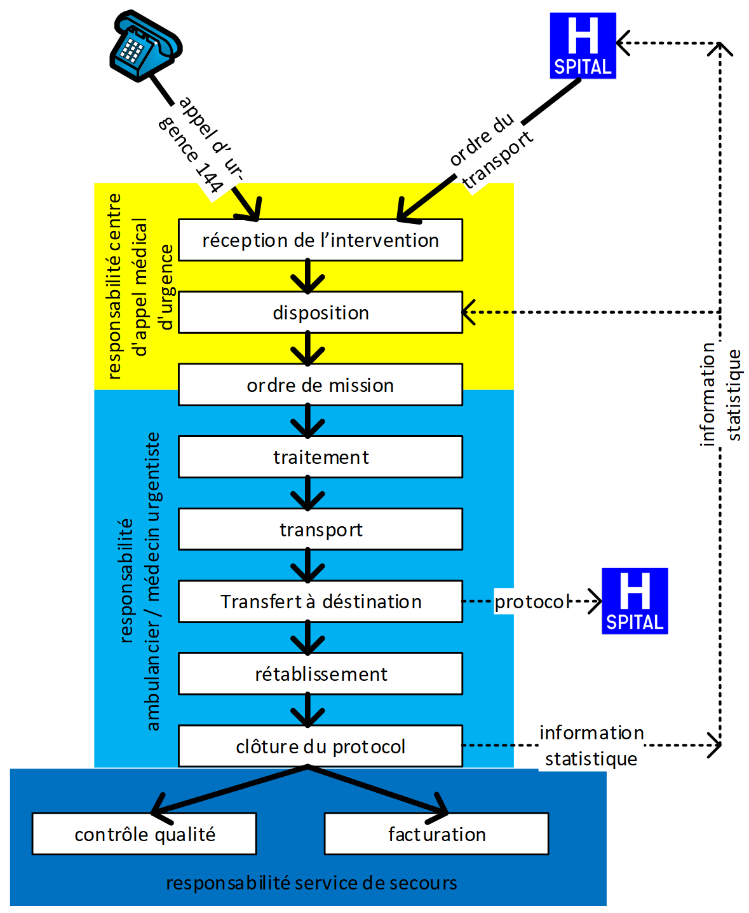

CH EMS (R4)
1.9.0 - Standard for Trial Use
CH EMS (R4)
1.9.0 - Standard for Trial Use
This page is part of the CH EMS (R4) (v1.9.0: STU) based on FHIR R4. . For a full list of available versions, see the Directory of published versions 
Les cas d’application représentés ici (UC = Use Case) se rapportent à des exemples tels qu’ils se présentent aujourd’hui aux différents acteurs du système de santé suisse concernés par la présente thématique. Certains de ces cas d’application ne sont possibles que si toutes les informations pertinentes sont interopérables et peuvent circuler grâce à des mécanismes d’importation et d’exportation.
L’objectif est, d’une part, de mettre à disposition des informations relatives à l’état de santé du patient sous une forme lisible pour les personnes participant au processus de traitement. D’autre part, le traitement électronique des informations doit permettre d’optimiser des processus dans les systèmes TIC.
Les cas d’application décrits ci-après expliquent ces rapports dans le présent contexte.
Le processus dans ses détails peut se dérouler différemment en fonction de l’événement déclencheur de l’intervention de sauvetage. Dans ce guide, nous partons cependant du principe que chaque intervention débute par un événement déclencheur dans le centre de répartition d’une centrale d’appels urgents et se termine par un contrôle de qualité et une facturation. Les données récoltées dans ce cadre sont toujours les mêmes et s’inscrivent dans un ensemble global unifié de toutes les possibilités. Les différences de déroulement des processus ont pour conséquence que, selon les cas, des groupes de données ou des éléments uniques peuvent être récoltés et traités soit de manière complète et détaillée, soit sous une forme simple, voire ne pas l’être du tout. Contrairement à un formulaire papier, un document électronique peut supporter de telles différences, simplifiant ainsi sensiblement la saisie des données. La spécification relative à ce dernier aspect ne fait toutefois par partie de ce guide.
Le graphique décrit par conséquent le déroulement le plus générique possible; ce déroulement est utile, mais n’entre pas dans des discussions de détail.
La Centrale d’appels sanitaires urgents reçoit un appel. Celui-ci concerne soit (a) un accident ou un problème de santé aigu et doit être traité le plus rapidement possible et en priorité absolue, soit (b) un transport prévu de personne avec contraintes médicales.
Les premières données relatives au domaine d’intervention (lieu d’intervention et destination) sont récoltées et documentées lors de cet appel. En cas d’événement majeur, des réserves sont possibles sur le lieu de destination, mais celles-ci doivent faire l’objet d’une clarification entre le départ de l’équipe de la base et l’arrivée sur le lieu de l’intervention.
Le personnel de répartition de la centrale demande le plus d’informations possible au sujet des personnes concernées. Alors que dans le cas (a), ces informations seront vraisemblablement limitées au nombre de personnes, à leur âge approximatif et à leur genre, elles pourront être saisies de manière définitive avec le mandat dans le cas (b).
Sur la base des informations disponibles, le personnel de répartition détermine la composition et l’équipement nécessaire de l’équipe d’intervention et sélectionne une équipe disponible ou se charge de sa création en procédant à des réorganisations dans les interventions en cours ou auprès des organisations partenaires.
Toutes les informations relatives au scénario “Intervention” sont ainsi définies. Seules les heures des statuts doivent encore être déduites ou saisies.
L’équipe d’intervention reçoit le mandat d’intervention et débute sa mise en œuvre. En route vers le lieu d’intervention, il est possible d’évaluer les informations disponibles et, le cas échéant, de demander des informations supplémentaires.
Un bilan de la situation est réalisé sur place avec les points suivants:
Toutes ces étapes sont consignées et documentées dans le protocole de sauvetage.
Alors que les données personnelles et administratives sont connues dès le début en cas d’intervention planifiée, elles doivent souvent être complétées une nouvelle fois sur le lieu d’intervention en cas d’intervention d’urgence. Cette opération peut être effectuée en parallèle à la saisie de l’anamnèse et des rapports; dans le cas le plus simple, le patient a sur lui une pièce d’identité et/ou une carte d’assuré.
Le transport commence dès que le patient peut être transporté et que le lieu de destination est connu (généralement, service des urgences pouvant accueillir des patients).
Le patient et le protocole de sauvetage sont remis au lieu de destination.
En cas d’intervention d’urgence, il n’est pas encore garanti, à ce moment-là, que le patient puisse être identifié de manière définitive. C’est alors à l’hôpital responsable du traitement de se charger de cette tâche et de clore définitivement le cas également sur le plan administratif.
L’équipe revient à la base avec son véhicule, exécute les opérations de rangement du véhicule et clôt le protocole. L’assurance qualité et le décompte (vis-à-vis du patient ou vis-à-vis du lieu de destination) sont maintenant de la responsabilité du back office du service de sauvetage.
Flux de travail

Deux cas d’application sont décrits pour le protocole de sauvetage:
1. Intervention primaire avec patient identifiable:
Intervention au cours de laquelle le service de sauvetage est le premier à entrer en contact avec le patient et peut identifier ce dernier de manière univoque sur la base d’une pièce d’identité, d’une affirmation du patient ou autre. Il s’agit ici souvent d’interventions d’urgence. La majorité des interventions primaires ne peuvent pas être planifiées par le service de sauvetage.
2. Intervention primaire avec patient inconnu:
Intervention lors de laquelle, jusqu’à la fin de l’intervention, l’équipe du service de sauvetage ne peut pas identifier le patient. Entre autres raisons, il est possible que la personne ne puisse pas s’exprimer et n’ait pas de pièce d’identité sur elle ou que lors d’un événement majeur, il ne soit pas possible de procéder à l’identification des blessés sur le lieu du sinistre faute de temps.
Ces deux cas d’application sont inventés librement. Ils servent uniquement à illustrer comment les indications recueillies au cours d’une intervention sont reproduites dans l’ensemble de données CH EMS. Ces cas d’application peuvent par conséquent contenir des indications qui ne sont pas judicieuses sur le plan médical ou tactique de l’intervention. La description de ces deux cas d’application contient des données qui peuvent être reprises, si possible, dans les exemples de données de l’ensemble de données. Si plus d’un exemple est donné pour un attribut de l’ensemble de données, ces exemples concernent un cas d’application ou les deux. La description des cas d’application est moins détaillée que les exemples de données. Cela signifie qu’il existe des exemples de données qui sont mentionnés dans les deux cas d’application ou uniquement dans l’un des deux, mais aussi des données qui ne sont pas du tout mentionnées dans les cas d’application.
Le 10 décembre 2016 à 12 h 09 (heure de statut ALARM), M. Pierre Model compose le numéro d’urgence 144. Il se trouve quelque part au-dessus de Zurich en bordure de forêt et indique qu’il ressent de fortes douleurs à la poitrine et dans la partie supérieure de son bras gauche. Il arrive à peine à respirer. Sur la base des questions posées au patient, la Centrale d’appels sanitaires urgents de Zurich (GLN 7601002156370) soupçonne qu’il souffre d’un syndrome coronarien aigu (ACS) et définit ce terme comme mot-clé de l’intervention. La localisation du patient permet de savoir qu’il se trouve aux coordonnées 47.392115, 8.553192.
La Centrale d’appels sanitaires urgents (CASU) crée, le 10 décembre 2016 à 12 h 11 (heure de statut DISPOSITION, désignation statut: DP), une intervention avec numéro d’intervention S12345678 et déploie sous le numéro D12345678 l’équipe 111 du Service de la protection et des secours (GLN 7601002156363) sur le lieu d’intervention avec un véhicule de sauvetage (Z-220) et du personnel: Petra Untel, ambulancière diplômée ES (école supérieure), GLN 7601003330434, et Jean Exemple, technicien ambulancier BF (brevet fédéral), GLN 7601000211804. Ce trajet doit être effectué en urgence et l’équipe active par conséquent les signaux prioritaires du véhicule. Ils quittent le poste de garde du Service de la protection et des secours de Zurich (SRZ) à 12 h 13 (heure de statut ROLLOUT, désignation statut: 1). Un médecin urgentiste est également déployé en parallèle (Dr Jean Alarescousse, médecin urgentiste SSMUS, GLN 7601000028105, poste fixe auprès du SRZ) et se rend sur le lieu d’intervention avec son véhicule. Sur la base des descriptions du patient et du lieu d’intervention, la CASU détermine à titre provisoire que le patient doit être transporté au service des urgences interdisciplinaire de l’Hôpital universitaire de Zurich (USZ, Rämistrasse 100, 8091 Zurich, GLN 7601002155939).
Le trajet du véhicule de sauvetage dure quatre minutes, l’heure d’arrivée sur le lieu de l’événement est donc 12 h 17 (heure de statut ARRIVAL ON SCENE, désignation statut: 2). Le véhicule de sauvetage ne peut cependant pas accéder directement au patient. L’équipe a en effet besoin de cinq minutes supplémentaires pour atteindre ce dernier à pieds avec tout son équipement. L’heure de statut ARRIVAL PATIENT (désignation statut: contact patient) est par conséquent 12 h 22. (Remarque: l’heure d’arrivée utilisée à des fins statistiques est toujours l’heure de statut ARRIVAL ON SCENE.) L’ambulancière diplômée en charge du suivi Petra Untel et le médecin urgentiste arrivé peu après évaluent l’état du patient au moyen de l’algorithme d’interrogation normalisé ABCDE. Les observations suivantes sont alors effectuées à 12 h 25: score de Glasgow (GCS): ouverture spontanée des yeux (4), réponse verbale normale (5), réponse motrice aux ordres (6), total 15; douleur 5; pression artérielle 120/80, mesurée au bras droit; température 37,2 °C. Le médecin urgentiste arrive à la conclusion que l’estimation de la CASU (ACS) est exacte et pose un diagnostic préliminaire d’infarctus transmural aigu de la paroi antérieure du myocarde, abrégé ACS/STEMI PA avec le code ICD-10 I21.0. Ils posent immédiatement une perfusion au patient et lui administrent une première dose de deux nébulisations de Nitrolingual Spray à 12 h 30. En parallèle à cette première prise en charge du patient, le collègue de Petra constate, grâce à la carte d’assuré du patient, qu’il s’agit de Pierre Model, sexe masculin, né le 10.1.1961, n° AVS 7560123123499 avec numéro de carte 80756003760012390001 de la caisse maladie CPT. Selon les affirmations de sa femme Erica Model (également présente), le patient habite à la Bahnhofstr. 1, 8001 Zurich et est originaire de Model-village ZH. Sa femme a précisé qu’il dispose d’un dossier électronique du patient. Monsieur Model a déjà été transporté une fois par le SRZ et dispose donc déjà d’un ID du patient auprès du SRZ: 762354. L’équipe a reçu les informations suivantes de la femme de Monsieur Model:
Il n’a rien mangé depuis le petit-déjeuner à 8 h environ. Après les premiers soins, le patient est transporté dans le véhicule de sauvetage sur une civière, puis préparé pour le transport. Le véhicule de sauvetage quitte le lieu d’intervention à 12 h 48 (statut: DEPARTURE FROM SCENE, désignation statut: 3). Alors que le médecin urgentiste se charge du patient durant le trajet, Jean Exemple annonce déjà le patient avec toutes les informations pertinentes au service des urgences de l’USZ. Étant donné le diagnostic préliminaire, il roule avec les signaux prioritaires activés jusqu’à l’USZ. Petra range les affaires de Pierre Model dans un étui destiné aux objets de valeur et établit une liste des objets de valeur qui sera remise plus tard à l’USZ avec l’étui. Le véhicule de sauvetage arrive à l’USZ à 12 h 54 (statut: ARRIVAL AT TARGET, désignation statut: 4). Le médecin urgentiste et Petra remettent le patient au médecin compétent, Dr Dochosto, GLN 7601000404268, au service des urgences de l’USZ. En parallèle, Jean Exemple ajoute les informations suivantes au protocole: le GCS affiche toujours 15; le score NACA est III lors du transfert du patient (séjour stationnaire du patient indiqué); la douleur a quelque peu diminué et atteint le niveau 4; l’état du patient s’est amélioré au fil de l’intervention. Petra signe le document à 13 h 05 et envoie ce protocole médical de clôture sous forme cryptée à l’adresse e-mail de l’USZ. Elle aurait aussi pu imprimer le protocole dans le véhicule de sauvetage pour ensuite le donner au format papier au service des urgences. Ce protocole médical de clôture est archivé de manière juridiquement contraignante auprès du SRZ, en cas de nécessité de clarifications juridiques dans un contexte médical.
Pendant que le médecin urgentiste retourne à la centrale après le transfert du patient, Petra et Jean préparent le véhicule de sauvetage, de sorte que l’équipe soit prête pour une éventuelle autre intervention d’urgence. Ils utilisent pour cela les réserves de matériel disponibles dans le véhicule de sauvetage. Comme aucune intervention n’est prévue directement, l’équipe rentre à la centrale avec le véhicule de sauvetage. Départ du lieu de destination (statut: DEPARTURE FROM TARGET, désignation statut: 5). À la centrale, le véhicule est à nouveau entièrement rangé et préparé pour la prochaine intervention. Cela signifie que tout le matériel utilisé est remplacé, le véhicule est nettoyé, etc. L’équipe est alors prête pour une nouvelle intervention (statut: OPERATIONAL READINESS, désignation statut: 6). L’équipe 111 saisit maintenant toutes les données supplémentaires pertinentes pour l’intervention (autre adresse de facturation, matériel utilisé, kilomètres parcourus, données pour les statistiques sur la violence…) dans le protocole électronique du patient. Une fois que toutes les données nécessaires ont été enregistrées, Petra et son collègue clôturent également l’intervention sur le plan administratif. Le protocole d’intervention est une nouvelle fois archivé, mais cette fois-ci avec toutes les données administratives et comptables pertinentes. Ceci permettra de documenter également sans ambiguïté des questions juridiques dans un contexte non-médical.
Cette étape clôture intégralement l’intervention pour l’équipe.
Exemples de mise en œuvre:
Le 10 décembre 2016 à 12 h 09, la Centrale d’appels sanitaires urgents de Zurich (SNZ; GLN 7601002156370) reçoit un appel urgent (statut ALARM). Selon la personne qui téléphone, une personne inconnue s’est effondrée dans la rue. Elle ne communique plus, mais respire, et une assistance d’urgence est demandée. Le lieu d’intervention se trouve à 8050 Zürich, Sternen Oerlikon, Schaffhauserstr. 350. Au moment de l’appel, aucune information plus précise n’est disponible.
La Centrale d’appels sanitaires urgents de Zurich déploie, à 12 h 11 (statut: DISPOSITION, DP), l’équipe 111 avec le véhicule de sauvetage (Z-211) équipé de signaux prioritaires sur le lieu d’intervention. L’équipe 111 est composée de Petra Model, ambulancière diplômée ES, GLN 7601003330434, et Jean Exemple, technicien ambulancier BF, GLN 7601000211804. Tous deux fournissent des prestations de personnel soignant. La SNZ attribue à l’intervention le numéro d’intervention S12345678 et le numéro de répartition D12345678. Au vu du manque d’informations relatives à l’incident, les mots-clés « situation imprécise, clarifications sur place » sont attribués à l’intervention. Étant donné le peu d’informations disponibles et le lieu d’intervention, la CASU détermine à titre provisoire que le patient devrait, si besoin, être transporté au service des urgences interdisciplinaire de l’Hôpital universitaire de Zurich (USZ, Rämistrasse 100, 8091 Zurich, GLN 7601002155939).
L’équipe 111 quitte le poste de garde du SRZ à 12 h 13 (statut: ROLLOUT, désignation statut: 1) et arrive à 12 h 17 sur le lieu d’intervention (heure de statut ARRIVAL ON SCENE, désignation statut: 2). Une fois sur place, l’équipe de sauvetage constate que le patient a été pris en charge par un sauveteur non professionnel qui lui a déjà fourni les premiers secours. L’équipe prend alors en charge le patient. Ce dernier n’est pas capable de fournir des informations sur lui-même, ne porte aucune pièce d’identité et aucune des personnes présentes ne le connaît. Petra Model lui attribue par conséquent un étui du système d’acheminement des patients (SAP) avec le numéro MU43221 à des fins d’identification.
L’ambulancière réalise une première évaluation de ce patient de sexe masculin, environ 50 ans, au moyen de l’algorithme d’interrogation normalisé ABCDE. Les observations suivantes sont effectuées à 12 h 25: Airway: les voies aériennes ne sont pas encombrées; Breathing: le patient présente une respiration spontanée normale; Cardiology: son pouls est palpable, il n’est pas victime d’un arrêt cardiovasculaire; rythme cardiaque 84/minute, pression artérielle 170/90, mesurée au bras droit; score AVPU: V (répond aux commandes verbales); score de Glasgow ouverture des yeux à la demande (3), dit de lui-même des mots isolés (3), rigidité de décortication (3), total 9; température 37,2 °C; ses yeux présentent une anisocorie évidente.
Petra pose par conséquent le diagnostic préliminaire « Stroke » avec le code ICD-10 I63.-.
Elle pose immédiatement au patient une perfusion de 500 ml de Ringer. Le patient est installé en position couchée dans le véhicule de sauvetage.
Le véhicule de sauvetage quitte le lieu d’intervention à 12 h 48 (statut: DEPARTURE FROM SCENE, désignation statut: 3). Alors que Petra se charge du patient durant le trajet, Jean Exemple annonce déjà le patient avec toutes les informations pertinentes au service des urgences de l’USZ. Étant donné le diagnostic préliminaire, il roule avec les signaux prioritaires allumés jusqu’à l’USZ et annonce que le patient a besoin d’une équipe prenant en charge les attaques au service des urgences et que la prise en charge est urgente (« rouge »). Petra range les affaires du patient dans un étui destiné aux objets de valeur et établit une liste des objets de valeur qui sera remise plus tard à l’USZ avec l’étui. Le véhicule de sauvetage arrive à l’USZ à 12 h 54 (statut: ARRIVAL AT TARGET, désignation statut: 4).
Petra remet le patient au médecin compétent, Dr Dochosto, GLN 7601000404268, au service des urgences de l’USZ. En parallèle, Jean Exemple ajoute les informations suivantes au protocole: le GCS affiche maintenant 10; le score NACA est III lors du transfert du patient (séjour stationnaire du patient indiqué); l’état du patient s’est amélioré au fil de l’intervention. Petra signe le document à 13 h 05 et envoie ce protocole médical de clôture sous forme cryptée à l’adresse e mail de l’USZ. Ce protocole médical de clôture est archivé de manière juridiquement contraignante auprès du SRZ, en cas de nécessité de clarifications juridiques dans un contexte médical.
Petra et Jean remettent le véhicule de sauvetage en ordre, de sorte que l’équipe soit prête pour une éventuelle autre intervention d’urgence. Ils utilisent pour cela les réserves de matériel disponibles dans le véhicule de sauvetage. Comme aucune intervention n’est prévue directement, l’équipe rentre à la centrale avec le véhicule de sauvetage. Départ du lieu de destination (statut: DEPARTURE FROM TARGET, désignation statut: 5). À la centrale, le véhicule est à nouveau entièrement rangé et préparé pour la prochaine intervention. Cela signifie que tout le matériel utilisé est remplacé, le véhicule est nettoyé, etc. L’équipe est alors prête pour une nouvelle intervention (statut: OPERATIONAL READINESS, désignation statut: 6). L’équipe 111 saisit maintenant toutes les données supplémentaires pertinentes pour l’intervention (autre adresse de facturation, matériel utilisé, kilomètres parcourus, données pour les statistiques sur la violence…) dans le protocole électronique du patient. Une fois que toutes les données nécessaires ont été enregistrées, Petra et son collègue clôturent également l’intervention sur le plan administratif.
Cette étape clôture intégralement l’intervention pour l’équipe.
Exemples de mise en œuvre: